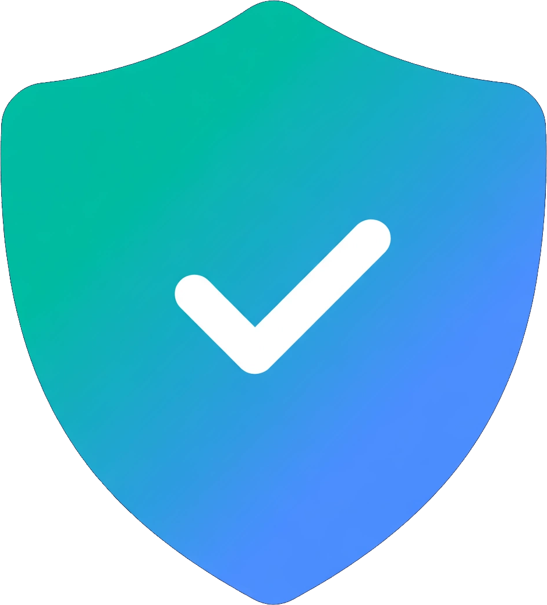

Salas para conversar,
como las de antes.
ONEchat trae de vuelta el chat por salas: países, temas, susurros, privados y juegos — con la calidez de siempre y la seguridad de hoy. Sin registros eternos: elige tu nickname y entra.
Entrar al chat Conocer la comunidad
Salas para todos
Una sala por país latino, Norteamérica, Europa y salas temáticas. Toca una y entra directo.
La comunidad
Personas reales, con su página y su galería. Ver el directorio completo →
El acceso anticipado, en cifras
ONEchat está en Early Access desde el 23 de noviembre de 2026. Este panel es temporal: se retirará cuando comience la Beta.
Lo que traerá la Beta
- Videos de YouTube dentro del chat
- Botón «Mencionar» y autocompletado de nicks
- Iconos de rango junto a tu nick
- Copiar mensajes con toque largo
- Sonidos y vibración cuando te mencionan
- Avisos del sistema dentro de las salas
- Cambiar tu nick desde el Perfil
- Cerrar tus privados a desconocidos
- Desactivar los susurros
- Enlaces externos con silencio automático
- Avisos de moderación en Status
- Panel del dueño para roles globales
- Destacados también por moderadores
- La conversación sube con el teclado
- Pantalla siempre encendida con el chat abierto
- Corrección del color de tu nick en la Sala General
- «Cine juntos» para Premium

Nuestro sistema de seguridad vigila las conversaciones de riesgo las 24 horas y actúa en segundos, incluso cuando no hay nadie del equipo conectado.
Intervenciones críticas de Centinel: conversaciones de riesgo congeladas al instante o alertadas con máxima prioridad al equipo de seguridad.
ONEchat Premium — muy pronto
Fotos ilimitadas en tu Galería, «Cine juntos» para ver películas en simultáneo con quien quieras, insignia Premium y más. Estamos en acceso anticipado: entra al chat y vive el nacimiento de la comunidad.
Chatea gratis, como en los chats de antes
ONEchat recupera las salas de chat de siempre: entra a la sala de tu país o a una temática, saluda y chatea con gente que está conectada al mismo tiempo que tú. Sin descargas y sin instalaciones: los chats de antes pedían Java y programas especiales; aquí todo funciona directo en tu navegador, desde el celular o el computador, y entras solo con un nickname.
Si buscas conocer gente nueva —hacer amigos, practicar otro idioma o encontrar a alguien especial— la conversación parte en las salas, como en los clásicos chat rooms: hablas en público, sigues por susurro o por mensaje privado, juegas una partida de Gato y cada persona tiene su página con su Galería. Nada de catálogos fríos de fotos: aquí primero se conversa.